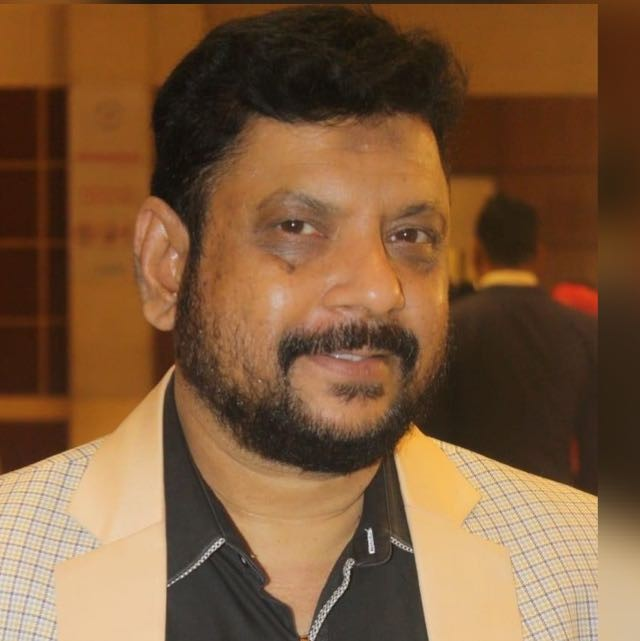

About Dr. Md. Akther Uz Zahan Pulok
Dedicated to the art and science of classical homeopathy
Professional Background
Dr. Md. Akther Uz Zahan Pulok is a highly respected homeopathic physician with over 12 years of clinical experience. He specializes in treating chronic autoimmune disorders, dermatological conditions, respiratory ailments, and psychosomatic diseases through individualized constitutional homeopathy. His approach integrates classical homeopathic philosophy with modern diagnostic understanding, ensuring safe and effective patient care.
Dr. Pulok is known for his empathetic consultation style and a strong commitment to evidence‑based natural medicine. He regularly attends international seminars and continues to advance his knowledge in homeopathic pharmacology and research. His mission is to provide accessible, holistic healthcare that treats the whole person — body, mind, and spirit.

Education
- Bachelor of Homeopathic Medicine & Surgery (BHMS) – University of Dhaka
- Diploma in Homeopathic Medicine & Surgery (DHMS) – Government Homeopathic Medical College
- Post Graduate Diploma in Homeopathic Pharmacy (PGDPH) – Bangladesh Agricultural University
- Certified in Advanced Clinical Homeopathy – International Homeopathy Academy, UK
- Certificate in Dermatological Homeopathy – C.I.P., London
Work Experience
- Senior Consultant – Green Life Homeopathy Clinic, Dhaka (2018–present)
- Visiting Homeopath – Bangladesh Health Alliance, Dhaka
- Resident Medical Officer – Central Homeopathy Hospital & Research Center (2012–2017)
- Clinical Supervisor – Homeopathy Training Institute, Dhaka (2015–2018)
Core Specializations
Certifications & Memberships
Fellow of the Academy of Homeopathy (FAH)
Member – Bangladesh Homeopathy Board
Certified in Homeopathic Dermatology (CIP, London)
Advanced Course in Mind-Body Homeopathy (Germany)
Certified in Clinical Nutrition & Lifestyle Medicine
Research Associate – Homeopathy Research Institute